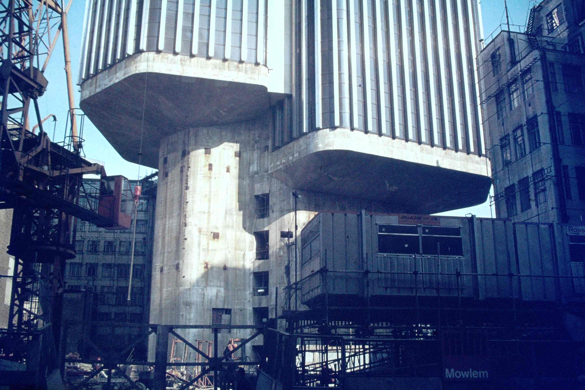

Tower 42 was originally built as the National Westminster Tower (NatWest Tower for short) to house offices of the bank's international division. It was designed by Richard Seifert & Partners architects and engineered by Pell Frischmann. Wilem Frischmann co-designed the tower alongside Seifert.
